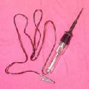
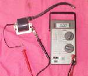
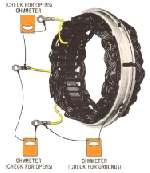
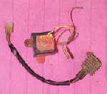
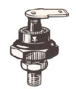
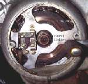
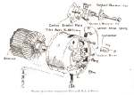
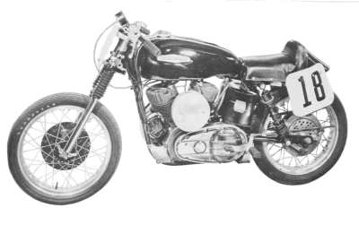
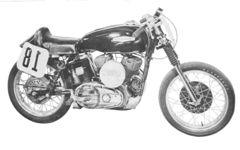

1 Thessalonians 5:21
¶


Electrical problems can pop up at any time and can seem hard to fix but they really aren't. Most of the time, anyway. Most everything can be "Proved" (tested) with an Ohmmeter and some things can be proved with a simple Circuit Tester.You can get a good cheap ohmmeter, sometimes called a multimeter, from a hardware store or an auto parts store. They generally run about $20.00. If you want, you can pay hundreds of dollars for one, but for the tests we will be performing, a cheap one will work just fine.
An ohmmeter sends a very low power electrical charge through a wire and measures how much resistance there is in the wire to the charge going through it. This resistance is measured in Ohms. Your shop manual will give you the correct resistance for each wire that you test.
The multimeter will measure a bunch of different things such as ohms, DC volts, AC volts, etc. Here are a few of the basic tests. They are all performed at room temperature (70 degrees or so). The word Continuity means voltage is passing through the wire from one end to the other. No Continuity means the wire is broken and voltage is NOT passing through it. Also, if we say something is wired in parallel, it means they are wired side by side. If two 12 volt batteries are wired parallel, the negative terminals would be wired together. Likewise for the positive terminals. This would still give us a 12 volt battery, only bigger. If something is wired in series, it means they are wired one after the other in a line. The two 12 volt batteries would be wired positive to negative, giving us one 24 volt battery.
A shop manual will be very handy to give you the Specifications on the different coils and wires. It also will have a wiring diagram, that will give you the different colors of the wires you are going to want to test. Most of the specifications I give here are just general ones to get you in the ball park. The Shop Manual will give you the exact ones.
Before you do any testing make sure you have a fully charged battery, if there is a battery, in the bike you intend to test. Just because it will start and run without the battery DOESN'T mean it will run right. Time after time guys will bring a bike in and say "It runs good and then it don't. Misses on one side then the miss changes to the other side." Some of them just will not believe it's a bad battery or the wrong size battery. "But it runs." they say, "It just can't be the battery." But it can be the battery. If it needs a battery, and you take the battery out of the system, things can overcharge, overheat and burn out. If the system calls for a battery, make sure a good one, fully charged, is in there. The only time this would not be true, is when the Ignition System is a magneto and the battey is only used to run the horn and tail light.
Now when I say "The right size of battery" I mean the battery must have enough amps to run all the things you want to test. If you don't have the right battery, you can use a big, fully charged battery, say from a car, BUT it MUST have the right voltage (6 or 12) and you MUST use big, thick jumper cables. DO NOT connect the jumpers to the old dead battery. Take the old, dead battery completely out of the bike. Connect the positive jumper cable to the positive cable on the bike. Connect the negative to a good ground on the bike.
Now you can run your electrical tests. The fact that the battery is a lot bigger then the stock bike battery will not hurt anything. The electrical components on the bike will only draw the powerr they need from the battery. The battery will not "Over Power" the components as long as the it is of the correct voltage. If you leave the old, dead battery in the system, it will try to pull power from the bigger battery. At best this will throw your electrical tests off. At worst the battery can BLOW UP! Usually, small bike batteries don't blow up... but, why take the chance?

Sometimes the ignition coil can be located under the flywheel and be self contained. That is, the ignition coil and ignition stator coil are one in the same. These are usually found on mopeds and small European bikes.

There are also different flavors of Alternators and Generators and I'm not going to go into that here. Get that shop manual out to be sure. Just to make things fun, some of the replacement coil sets have very short leads. You have to cut the old leads and plugins off the bad coils and use small wire crimps to hold the wire together. If you solder the wires together the wires can separate once the engine gets good and hot and the solder softens a bit. In other words, soldering may or may not work. Crimping won't come lose under heat. However, no one sells the crimps and they don't give you ANY extra wire AND you have to put something on the wires to keep them from shorting against the crankcase. Fun, fun, fun. You can get little crimps from appliance parts supply houses or you can make your own by cutting the end off a wire fitting. Put the cleaned and stripped two wires in the crimp and crush them together with some vice grip pliers. Then insulate the repair with heat shrink tubing.
Ignition Source Coils. These are coils, under or around the flywheel, that supply energy for the ignition. Usually, almost always, these coils are grounded. Usually, 300-500 ohms from output wire to ground.
On the above coils. Often, but NOT always, if you stick a Circuit Tester on the charge wire and clip the other end of the tester to ground, then kick the engine over, you will light the tester bulb briefly. This indicates you are getting some kind of juice out of the coil. But like I say, NOT always.
Trigger, pick-up or pulse coil. These coils tell the electronic ignition black box when to fire the ignition coil. Usually two wires. Usually, one to three ohms resistance between the two wires and no continuity between them and the ground.

Voltage Regulator. All the current from the charge coils would over charge the battery if we let it, so we need a voltage regulator to keep the battery charged at 12 volts. Your ohmmeter should have a DC volt scale. Set it at 20 volts and connect the positive and negative leads to the right battery terminals. Make sure the battery is fully charged, so we get a correct reading. Start the bike and rev it up. The volts should go up to 13.8-14.5 volts and then stay there. Much more, and it will over charge the battery. Much less, and the battery will never charge up. Some voltage regulators can be adjusted and some cannot. If you can't get it's cover off or if it is all sealed up, it's non adjustable. If you can get the cover off, you can clean the little contact points and adjust it with a screw driver till you get the right charging rate. Most, nowadays, are not adjustable.
Most of the newer bikes have the Rectifier and Voltage Regulator as one unit. If either one goes you have to replace both. AC current will light the headlight and everything else. Light bulbs don't care if it's DC or AC current. If you have a dirt bike and don't need a battery you can get an after market voltage regulator for $30-40 and it will keep you from blowing bulbs. A number of the older, smaller, bikes had no voltage regulator. I guess they thought the battery would soak up the extra current... they were wrong, so put one in. There also is a cheap after market rectifier/voltage regulator unit you can put on, if you need a battery. It will also work on some street bikes too, but you have to make sure it matches the charging system.
Capacitors. On some older bikes (Mostly British, like Triumph, BSA, Norton, etc.) There will be a capacitor that holds, or stores electricity for the ignition. They have a limited storage life of about 12-18 months if not in use. Use it or lose it, I guess ! To test, connect a 12 volt battery to it for about five seconds. Make sure the polarity is right. Plus to plus, negative to negative, or it will be ruined. Let it sit at least five minutes, then connect a DC voltmeter (your ohmmeter set to DC volts) to the terminals. When you take the reading wait a bit for it to stabilize. A good one, should read at least 9 volts.

I loved that bike, but just like a bad woman, it was fickle. When she ran, she ran GREAT. she just didn't run GREAT for long. Fiddle with her, play with her, pay attention to her all the time, bring her gifts (new battery, pipes, paint, anything to keep her happy) and she would give you a taste of heaven... but only a taste ! Every six months or so, I would get her a new battery and life was good. Everything worked, and, oh, it was great. Then the battery would crack and... ! Anyway, They need to be in a good heat sink. The best thing to do with these things is to throw them away and buy a real voltage regulator, but if you want to test them Here is the official way.
- Disconnect the cable going to the zener diode and connect, in series, a ammeter, with the ammeter positive lead connected to the diode terminal
- Connect a DC voltmeter between the zener diode and the heat sink. The red or positive lead of the voltmeter must be connected to the heat sink, which is then connected to the frame. Remember, British bikes have positive ground, at least the ones with zener diodes. Gerrrrr!
- With lights off and battery fully charged. Start the engine and, while watching both meters, slowly rev the engine up.
- The ammeter should read zero till the voltmeter reaches 12.75 volts.
- Increase engine speed till ammeter reads 2.0 amps. The voltmeter should read 13.5-15.3 volts.
- If the ammeter reads anything before the volts are 12.75 or if the voltage is higher than 15.3 at 2 amps replace the zener diode... and they cost a lot more than $20.00 now.
 
Brushes. If the system has brushes they must move freely in their holders and be long enough to always be in contact with the slip rings. If you can't get a brush for an old bike, you can sometimes take another, larger brush, and cut it down to the right size. As long as it works, who cares what it looks like ! Handle them carefully, they break easily.
Flywheel Magnets. These are usually quite trouble free. Back in the 1930s, 40s, and 50s, the magnets were not so good. If you dropped them or banged them about they could loose their magnetism. I've never seen that happen on a modern bike, but I suppose it is possible. They had a special machine to remagnetize them.
Remember, the ohmmeter may have some internal resistance, usually .5 ohm. Hold the ohmmeter leads together to find out what that resistance is and subtract it from your test readings. Take the readings when the part has warmed up to 70 degrees or so. If you don't, the readings will not be accurate. Take several readings and, if you have several ohmmeters, use them all. The more readings you take, the less errors you will make. Most of the specs are given plus or minus 10-20%. Of course, some of the specs the factories give out may not even be right.
Check this out. A guy brings me in a four wheeler. It won't start. Says the battery was totally dry and he filled it up with water, it ran a bit and then died for good. I try to trickle charge the battery but it has some dead cells so I put in a new one. Won't start... no spark. I test the ignition coil, it's within spec. Test trigger coil and it's within spec. Test the source coil and it reads 273 ohms. Spec calls for 347-425 ohms. Found problem, right? No. I pull the coils and the lighting coils are all burnt up (nobody said a word about the lights being out) but the source coil looks fine, but it didn't test right. So I replace the coils which only come as a set. Just because, I check the reading on the new, fresh out of the factory wrapping, $100.00 source coil and guess what? It reads 273 ohms too. Still no spark. Gerrrr. I find a used black box (New are $275.00), put it on, (no specs, so you can't test them) and Bingo, spark. All my test figures are right out of the factory book, run at 70 degrees, I used two different ohmmeters, and ran the tests several times. This is kind of normal for electronic stuff. That's why nobody wants to guarantee electrical parts.
Sometimes the bike ignition, lights, turn signals, etc. will just stop working. Here is where the little circuit tester light can really help. You will need the wiring diagram for your bike so you can pinpoint which color wires are used on the offending part that doesn't work. I usually check all the grounds first because they can get rusted and will not conduct electricity. I then check and see if we are getting battery voltage (the light lights up) at the dead part. If I am, then maybe the part itself, bulb, switch, whatever, is dead. If not, I go back to the battery and check again for battery voltage. If I get it, I then work my way along the wires till I don't get battery voltage. Check the different electrical plugins. Sometimes just plugging and unplugging them can cure things. if there is no plugin to check, you can still check the wire by sticking a small needle into the wire insulation till it hits the wire. When you pull it out the hole tends to close up and heal it's self. If you do it right, you don't have to tape it or anything when you are done. If it is a switch, you can sometimes clean out the corrosion with some electrical contact cleaner or by scraping the gook out. Look for anyplace the wires could be rubbing against the frame or touching a hot part, like an exhaust pipe. You may have to take the tank and seat off, or get into the headlamp shell. Remember too, that often when one thing goes, something else goes too. I don't know why... it just seems like that happens a lot. Be patent. It can take a long time to find the problem.
If you replace burned out bulbs with bulbs that have a different wattage than stock it can goof things up, sometimes. It can make the turn signals blink faster or slower. If it's a charging indicator light bulb it can upset your charging rate. It might not hurt anything, and then again... !
A lot of bikes now have safety, ignition, cut outs to keep you from starting the bike when it is in gear or to keep you from riding off with your side stand down. They seem to be putting them everywhere. If your bike will not start they must be checked. Here are some of the places I have found them.
- The clutch lever. It must be pulled in, to start the bike.
- The side stand. It must be up, or the engine will die when put in gear.
- When the bike is in gear. The bike must be in neutral to be started.
- Reverse Gear. The rear brake must be applied to shift into reverse on most four wheel ATVs.
Give big brother some time and I'm sure he will force more safeties down our throats... all for your own good, of course.
When you check for spark, the spark must jump at least 1/4" (.250") or more outside the engine. Just laying the spark plug in the plug cap, on the cylinder head, and getting a spark across a .030" gap is no good. It takes a lot more power to jump a gap under compression in the engine then outside the engine under no compression pressure. Also, if it's electronic ignition, you must spin the engine to at least three or four hundred RPM. Any less and the anti kick back circuitry in the CDI black box kills the spark.
Voltage Drop Testing. OK, let's see if I can explain this right. When you measure the voltage on a battery by putting the positive ohmmeter lead on the positive terminal and the negative lead on the negative terminal, you are actually measuring the voltage pressure between the two terminals. The positive terminal reads 12.6 or so volts and the negative terminal reads zero. The wiring circuitry in the ohmmeter subtracts the negative lead voltage from the positive lead voltage (12.6v-0v=12.6v) and you end up with the reading 12.6 volts. What does all this mean? Well, if you connect the positive ohmmeter lead to where the power starts. Like the positive battery terminal, and the negative lead to where you want the power to go, like a starter. Now run the starter. You should get a ohmmeter reading of zero. If you get a reading, that is the voltage drop. This indicates resistance in the starter cable or in the connection to the battery or starter. Another way of thinking on this is that the voltage drop is the number of volts that you lost over that connection. The reading you get on the ohmmeter is number of volts you have lost. You can test the ground connection side of the starter too. Connect the negative ohmmeter lead to the negative battery terminal and the positive ohmmeter lead to the starter body. Again, crank the starter. A DC circuit should use all the available voltage, so the reading should read close to zero or not more than .4 volts.
Lastly, and maybe this should be firstly, don't forget to check the kill button, or switch, if things won't start. I was a teenager working in a Honda shop in 1968 when Honda brought out the CB 350 twin. They didn't really have kill buttons, or rather, kill switches, as a regular thing on bikes before this. You might put one on your race bike, but this was something you did yourself, and it was a button, not a switch. Most factories put a key switch on and figured you should use that to turn the engine off. The 350 had a factory kill switch on the handlebar.
Our head mechanic thought he knew everything there was to know about motorcycles. He was servicing out a new 350 and was just about to start it for the first time when I came over, said Hi, put my hand on the switch and turned it off. He growled at me and I walked away. For the next two or three hours he did just about everything you can do to a bike to get it to start... with no luck. He walked away from it, well, shall we say a bit irritated? I asked if I could try and he said yes... stupid kid... so I waited till he was about 50 feet away, turned the switch to on and it started on the first kick. I revved it up several times and turned the switch off again. What fun. He came running back, and wanted to know what I had done. I said I just turned it on and it ran, which was true... kinda, sorta.
Kick, kick, kick. It sure wouldn't start for him. He killed a lot of time on that one. When he did figure it out he never really said anything to me about it. I mean really, what does a stupid teenager know, right? Do yourself a favor and check the kill switch first thing, OK?

 |
 |
Copyright © 1999-2003 dansmc.com. All rights reserved.